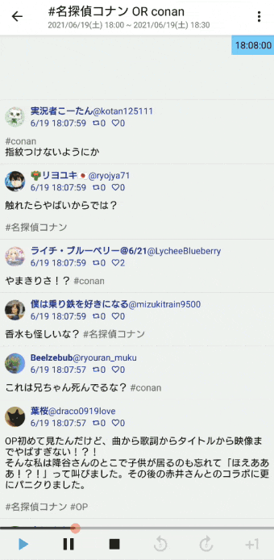

録画した番組を見ながら
その番組の放送中に投稿された実況ツイートを読もう。

Twitterと通信を行うアプリなので、利用者は自身のTwitterアカウントとアプリ連携を行う必要があります。
アカウント連携画面で『アプリ連携の認証へ』を選択すると、ウェブブラウザでTwitter公式のアプリ連携認証ページが開かれるので、そこで『連携アプリを認証』を選択することで連携が完了します。
場合によってはTwitterへのログインを済ませておく必要があります。
連携済みの状態だとホームメニューに連携中のTwitterアカウントが表示されます。
これをタップすると連携を解除できます。
この画面でTwitterから取得しにいく番組実況ツイートの情報を入力します。
検索キーワード: 基本的に、番組実況に使われていたハッシュタグを入力します。ORやANDなどのTwitter検索コマンドの使用が可能です。
実況開始時間: 番組開始時間を入力します。
実況終了時間: 番組終了時間を入力します。
実況開始時間と実況終了時間は後から変更可能です。
5月28日の21:30放送開始23:30放送終了の"金曜ロードショー"を録画していた場合、
検索キーワードに"#金曜ロードショー"
実況開始時間に"5月28日の21:30"
実況開始時間に"5月28日の23:30"
を入力します。
なお、番組実況ツイートの取得を想定していますが、検索キーワード次第でどんなツイートでも取得可能です。
設定を済ませて『リプレイ開始』を選択すると、「リプレイ画面」に遷移します。
当時の番組実況の様子が再現再生される画面です。
画面右上に時刻が表示されています。これは、その時間までに投稿されたツイートを順に表示しているということです。下の画像の場合は5月28日23:13:31までに投稿されたツイートを順に表示しているということです。
下部の再生ボタンをタップすると右上の時刻が進み、その時刻に投稿されたツイートが次々と表示されていく、という仕組みです。
時刻は停止モード中に自分で画面をスクロールさせたり、下部のシークバーをスライドさせても変化します。
録画した番組を視聴しながらこのアプリを使用するのが主な使い方です。
録画番組の開始時間とアプリの「リプレイ画面」の右上の時刻が一致していることを確認したら、録画の再生と同時に下の『再生ボタン（▶）』をタップします。
このようにして、録画した番組を視聴しながら、その番組が放送されていたときに投稿されたツイートを読む、というのが主な使い方です。
リプレイ画面右上の「︙」をタップするとメニューが開きます。
保存されてあるリプレイの一覧を表示する画面です。表示されているリプレイを選択するとそれを再び再生することができます。
保存は自動で行われています。
画面右上のチェックボックスをタップすると、削除モードになります。
{kind=link}